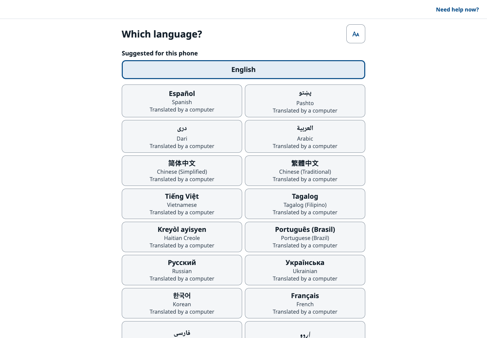
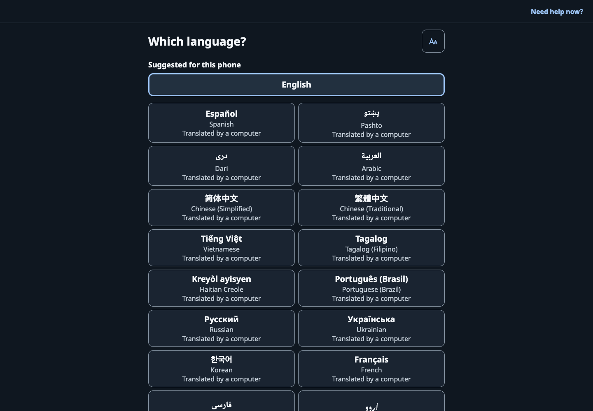
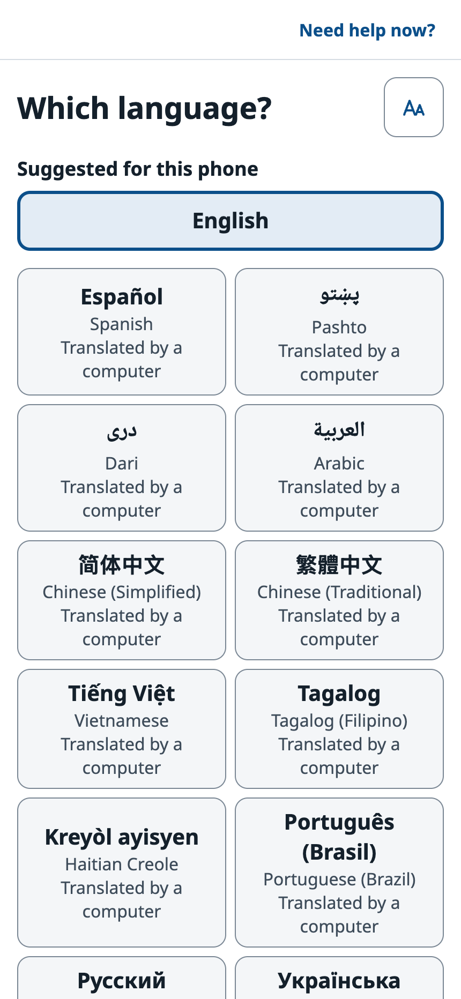
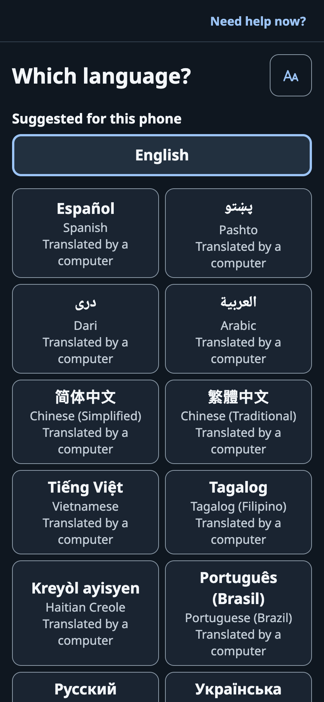

Three cards
What is this? · What is it asking for? · Your step-by-step plan, plus an urgency banner.
An AI web application translating dense medical documents into plain language for local families and refugees.
“Your paper, explained.”The project’s own one-line summary, from its README
The AI server runs on a free tier. After it has been idle, it can take 30–60 seconds to wake up, so this page sends it a wake-up request as soon as you arrive.


I interpret between English and Pashto for my family and for refugee community members.
ProxyHealth AI is for people in that position: immigrants and other adults who get official papers in a language they do not read well, such as a medical bill, an immigration notice, an eviction letter or a benefits letter. A person photographs the paper, and the app explains it in their own language: what it is, what it asks for, and a step-by-step plan, with every deadline quoted from the paper.
The app supports Pashto and Dari, along with 25 other languages.
Information, not advice. The app explains what a paper says. It presents itself as information, not legal or medical advice, and its chat refuses questions about outcomes or eligibility.
The AI reads the paper, but code decides what counts as a fact: dates, amounts and requested documents are checked against words quoted from the page. Click a step to see what happens.
Take or pick 1 to 12 photos, or choose one PDF. Before anything is uploaded, the app shrinks each photo to a 1600-pixel JPEG and strips its EXIF data (hidden details a camera stores in a photo file).
No paper handy? Sample mode has 18 made-up papers, watermarked SAMPLE, so you can try the app without uploading anything.
There is no separate text-recognition (OCR) engine. Page images go to the Google Gemini API, where the gemini-3.8-flash model reads and explains the paper. PDF pages are first turned into images on the server with pypdfium2.
The dates, amounts and requested documents it reports then go through the checks in the next step.
Each date, amount and requested document is shown next to the exact words quoted from the paper, and those quotes are checked in code. Tap a fact to see the words highlighted on the page. Anything that cannot be confirmed is listed separately.
Dates and urgency are computed by code, not by the AI. A date comes only from the paper itself, or from a relative phrase printed on it, counted with one of 12 deadline rules that each cite a source.
The explanation arrives as three cards: What is this?, What is it asking for? and Your step-by-step plan, plus an urgency banner. Any of the 27 languages can be used, and every paragraph can be read aloud.
For anything the cards don’t cover, Ask about this paper is a chat that answers only from the paper.
Reminders arrive 7, 3 and 1 days before each verified date (as an .ics calendar file on the web). There is also a printable or PDF quick sheet, and a high-contrast Show the clerk card in English to hand to the person at a counter.
Get help nearby lists 101 vetted resources, national and in Northern Virginia, with a what-to-bring checklist; every resource carries the date it was verified.


The beta runs in a phone or desktop browser. To see a full explanation, follow the demo path from the project’s README:
If the first explanation is slow, the free-tier server is probably waking up; give it up to a minute.
The free-tier server sleeps after 15 idle minutes. On Nov 1, 2026, the first request after idle took 32.3 s; two checks once it was awake took about 0.1 s.
Every sample is synthetic: made-up names, watermarked SAMPLE. Search them or filter by topic.
Showing all 18 sample papers
No sample paper matches that search.
Fourteen things the app does, grouped by what they are for.
Showing all 14 features
What is this? · What is it asking for? · Your step-by-step plan, plus an urgency banner.
Each date, amount and requested document sits next to the exact words on the paper. Tap one to highlight it on the page; anything unconfirmed is listed separately.
Dates and urgency come from code, not the AI: only from the paper, or from a printed relative phrase plus one of 12 cited deadline rules.
A chat that answers only from the paper and refuses questions about outcomes or eligibility.
Read-aloud on every paragraph; reminders 7, 3 and 1 days before verified dates (.ics on the web); a printable or PDF quick sheet.
A high-contrast English card to hand to the person at a counter.
A vetted database of 101 help resources, national plus Northern Virginia, with a what-to-bring checklist and verified-on dates.
Explains a screenshot, naming the buttons exactly as the screen writes them.
One tap from every screen: 911, 988 (call or text), Poison Help and a domestic-violence helpline.
A fixed scam warning for gift-card, wire, payment-app, crypto or arrest/deportation demands, and an emergency card for words about chest pain, overdose or self-harm in 26 languages.
The server keeps uploads in memory only and logs no content; the family vault stays on the device; a “Hide parts” masking tool is built in.
The “Big Calm” design system: 18 pt base text, 56 and 72 pt controls, 7:1 body-text contrast, 200 % text scaling, and WCAG 2.2 AA (the main web-accessibility standard) as the floor.
18 synthetic sample papers (made-up names, watermarked SAMPLE) to try the app without uploading anything.
1 to 12 photos or one PDF per paper. The app compresses photos to 1600 px JPEG and strips EXIF data before upload.
These are the languages the live app lists. Packs for English, Spanish, Arabic, Dari and Pashto are bundled with the app; other languages get a generated pack. If a reader’s language is not listed, they can type its name, in any language. In the app, every language except English is labelled “Translated by a computer.”
Showing all 27 languages
That language isn’t in the list, but the app has a “My language is not here” box where a reader can type its name.
RTL written right to leftBundled pack ships with the appps language tag
People photograph sensitive papers. Here is how the app handles them, and how it reacts to scams and emergencies.
The server keeps uploads in memory only and logs no content. Saved papers go into a family vault that stays on the device. Photos are shrunk and stripped of EXIF data on the device before upload, and a “Hide parts” tool can mask parts of a page.
Demands for gift cards, wire transfers, payment apps or crypto, and arrest or deportation threats, trigger a fixed scam warning. The patterns cover English, Spanish, Arabic, Dari and Pashto. One of the sample papers is this kind of letter: one claiming to be USCIS and demanding gift cards.
Words about chest pain, overdose or self-harm, in 26 languages, bring up an emergency card. The “Need help now?” screen, one tap away, lists:
The app explains what a paper says. It presents itself as information, not legal or medical advice, and its chat answers only from the paper, refusing questions about outcomes or eligibility.
The live web app also sends security headers: HSTS, X-Frame-Options DENY, X-Content-Type-Options nosniff, Referrer-Policy no-referrer, a Permissions-Policy that allows the camera only for the app itself, and a Content-Security-Policy in report-only mode.
A Python server, one TypeScript app for every platform, and the Gemini API. Source code public on GitHub.
| Part | What it uses |
|---|---|
| Server (API) | Python 3.13 + FastAPI 0.141.1, with Pydantic 2.13.5 and uvicorn 0.53.0. Pillow handles images, pypdfium2 renders PDF pages to images, and reportlab (with arabic-reshaper and python-bidi) builds the quick-sheet PDF. slowapi adds rate limiting. |
| App (iPhone, Android, web) | TypeScript + Expo / React Native, one codebase for web, iOS and Android: Expo SDK 57, React Native 0.86.3, React 19.2.3, Expo Router, and react-native-web for the static web export. On the device: expo-camera, image-picker and document-picker to capture papers, expo-speech to read aloud, expo-sqlite for the on-device vault, expo-notifications for reminders. |
| AI | Google Gemini API through the google-genai 2.25.0 SDK. gemini-3.8-flash reads and explains papers and screenshots; gemini-3.5-flash-lite builds language packs and answers chat. No separate OCR engine: quotes are verified in code. A built-in mock provider runs sample mode with no API key. |
| Hosting | Docker on Render: a python:3.13-slim image with one uvicorn worker, on Render’s free plan in the Virginia region, plus a Render static site for the web app, served through Cloudflare. Both are defined in the repo’s render.yaml. |
| Quality | pytest and Jest + Testing Library (the README reports 3,403 API tests and 566 app tests), ruff, strict mypy, ESLint, and GitHub Actions CI. |
Python, the backend language, is 58.5% of the code; TypeScript, the app’s language, is 39.5%.
Running it locally in sample mode takes four commands and needs Python 3.13, Node 24 and make on macOS or Linux. Sample mode needs no API keys.
All 50 commits in the repository are authored as Morsal Mubarak.
The first commit was Sep 27; 35 of the 50 commits landed in three days, Oct 22–24.
Commit message: “Scaffold ProxyHealth AI monorepo with design backbone and research”. By Oct 4 there were 12 commits.
19 of them on Oct 22, the busiest day in the commit history.
The repository was created on GitHub, the 50th commit landed, and the live web app was last updated.
The iPhone and Android store builds are not submitted yet, and the project docs name Google Cloud Run as the planned production host.